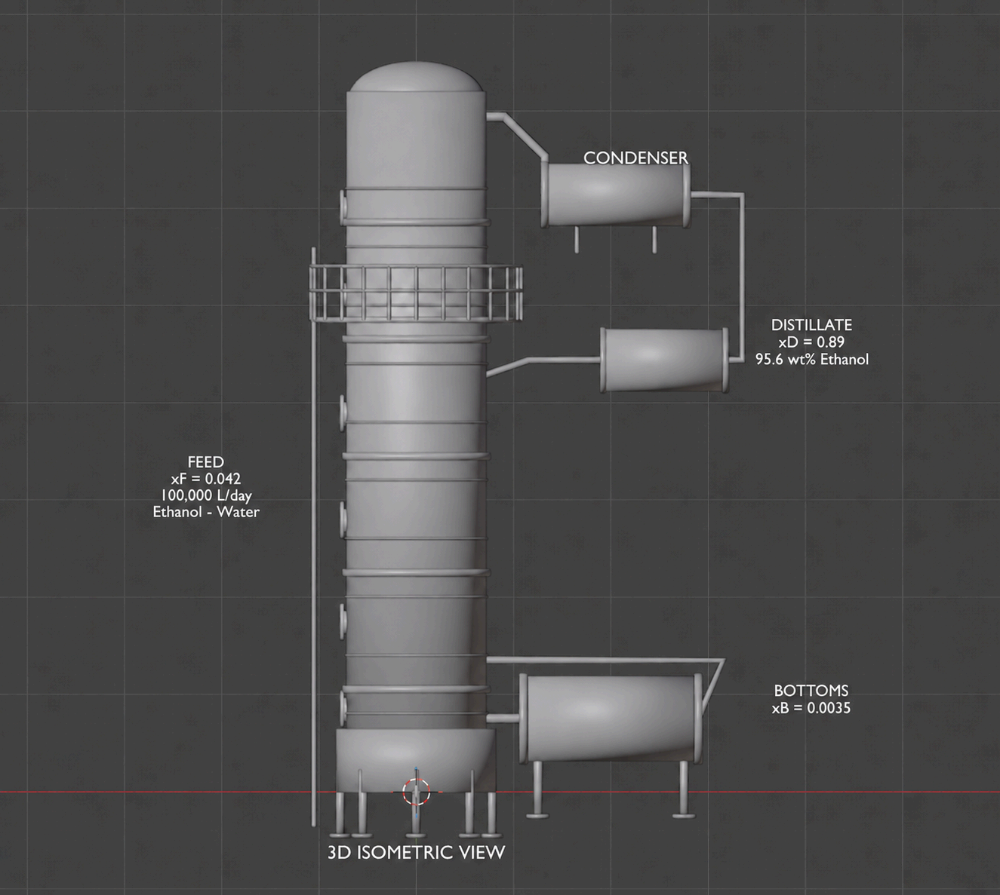
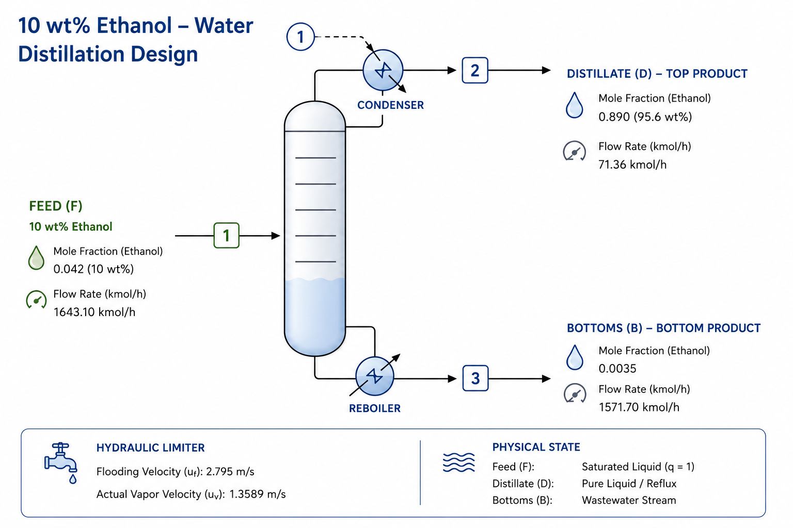

An industrial grade engineering simulation and column architecture design for purifying fermented corn starch hydrolysate to a 95.6 wt% high-purity bioethanol standard.
Developed at Ankara University, Department of Food Engineering (FDE450).
Efficiently separating and enriching low-concentration bioethanol streams produced via corn starch fermentation using Saccharomyces cerevisiae up to precise industrial chemical targets.
Rigorous mathematical applications combining Vapor-Liquid Equilibrium (VLE) empirical datasets, multi-component mass conservation parameters, and continuous McCabe-Thiele stage analysis.
Processing a substantial continuous feed capacity of 100,000 Liters/day to consistently cross the commercial threshold at 95.6 wt% azeotropic mass purity.
Corn starch hydrolysate is fermented using Saccharomyces cerevisiae. The resulting broth contains approximately 10 wt% ethanol.
The fermented mixture is preheated and fed to the column as a saturated liquid under q=1 conditions.
Ethanol-water separation is achieved using McCabe-Thiele based tray design with reflux ratio R = 3.96.
A distillate stream containing 95.6 wt% ethanol is obtained at the column top.


Grassroots Capital / Plant Setup G&A
Raw Corn Feedstock, Utilities & Labor
Complete Lifecycle Allocation
Per Liter of 95.6 wt% Bioethanol